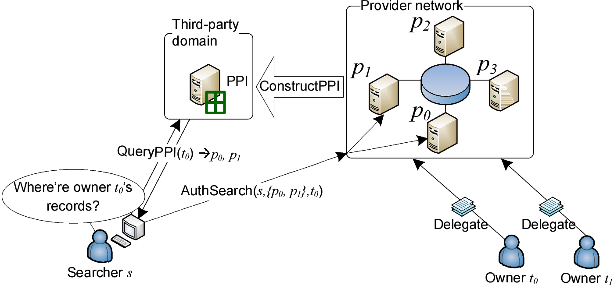
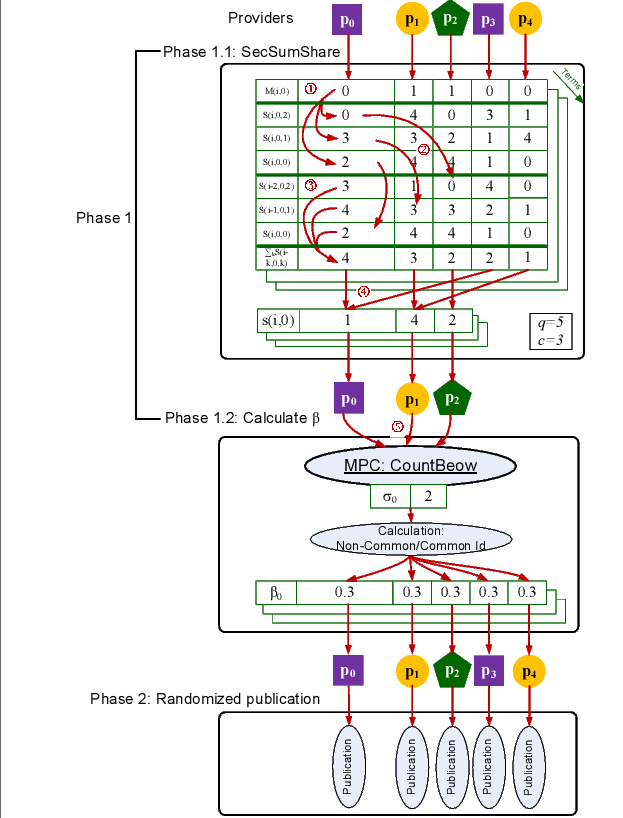
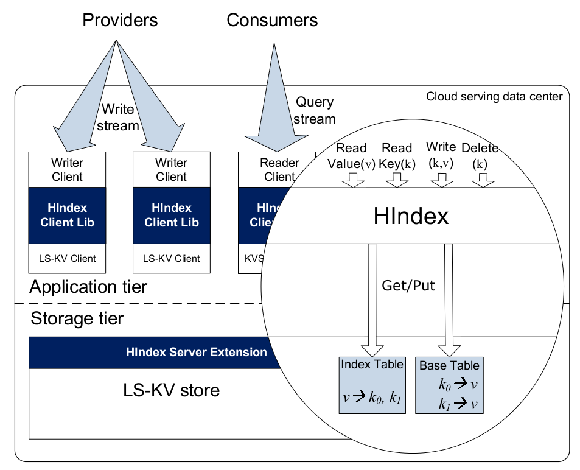
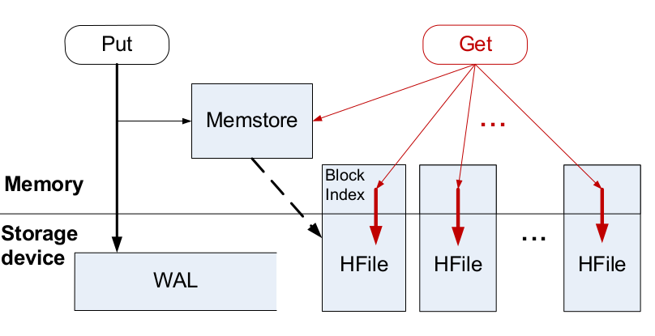
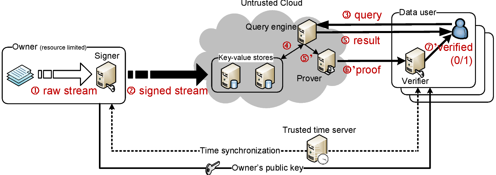
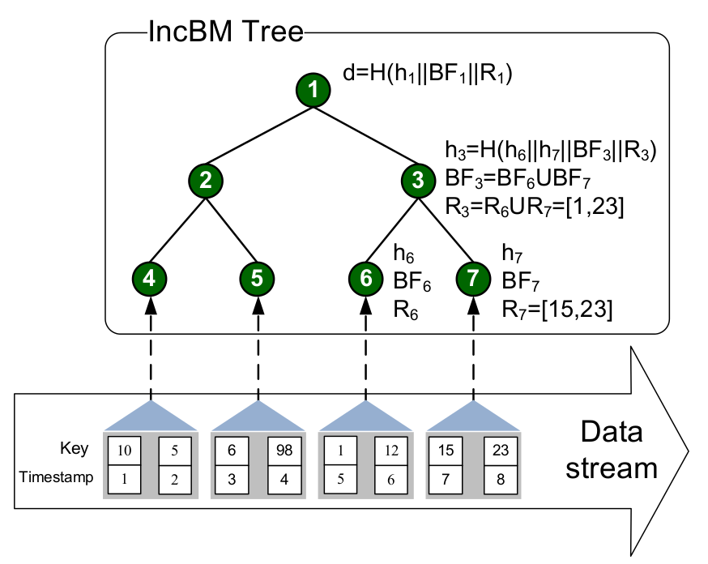
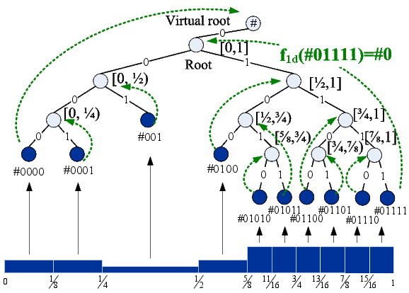

Research
Education
Publications
Teaching
|
Research Projects
Yuzhe Tang Last updated Jan. 12, 2014 |
|
Privacy Preserving Index and Search in Multi-domain Distributed Clouds |
|
|  | |
|  |
Introduction:
In the age of cloud computing, cloud data users submit their data to a
third-party cloud domain to process their data. While the cloud computing
paradigm enjoys a success nowadays, the cloud users may lose the control over
their data. Recently, the move toward giving data control back to cloud users
has given birth to a variety of distributed cloud systems for different
applications. The distributed cloud system
runs in multiple autonomously administrated domains (e.g. different servers in
different countries) and the data owners are given a choice on the cloud domain
to store their personal data. For example, in an eHealthcare network, a patient
can store her data to a hospital she visited, or in a distributed social
network.
Research contributions: In the distributed cloud, information exchange and sharing between different domains, while crucially important from an application point of view, raise concerns on data privacy and confidentiality. We propose a privacy preserving index (or PPI) framework to facilitate information sharing across a domain boundary without sacrificing data privacy. A PPI provides a directory lookup service for federated data discovery in the distributed cloud. For privacy protection and effective search utility, I first proposed an efficient index construction protocol, named ss-PPI [CIKM'11], based on the efficient use of secret sharing. Based on the observed needs for differentiated privacy preservation, I then proposed ePPI [ICDCS'14] that provides quantitatively controllable privacy protection for different data owners. To address multi-keyword content search against unstructured data, I proposed mPPI [TKDE'15]. The key challenge in realizing the proposed PPI frameworks comes from the needs for secure index construction in a mutually untrusted network. While the common wisdom for secure computation is to use the multi-party computation (or MPC) techniques, the existing MPC frameworks do not (yet) provide a practical platform for big-data computation, as its performance is only feasible for small workloads. I proposed several MPC optimization techniques (as in the left figure) for realizing the massive computation in the PPI construction on tens or hundreds of cloud domains. System implementation: The proposed secure PPI construction is implemented. The system implementation is based on several existing computing software, including FairplayMP platform for secure MPC, Google's Protobuf and JBoss's Netty for RPC with flexibility, and Mathematica for NLP computation (non-linear programming). |
|
Indexing Key-Value Stores with Deferred Repairs | |
|   |
Introduction:
The recent workload shift in clouds toward write-intensive workloads (e.g. for Web 2.0 applications)
has caused the proliferation of various write-optimized data storage systems, such as HBase,
Cassandra and BigTable. While these scalable stores, mostly called key-value stores, provide
key-based methods such as Get for data reads and retrieval, the value-based access methods
are rarely supported due to the challenge of indexing big data at scale.
Research contributions: This project addresses the indexing problem of the write-intensive key-value data under the design goals of real-time data availability and lightweight index maintenance. The real-time availability entails that the recently updated data should be indexed in (near) real time and be made available to query results as soon as possible. Toward the design goals, I proposed DELI [CCGrid'15], an append-only index design for write-optimized key-value stores. DELI utilizes an index repair operation for a garbage collection. For the optimized performance, I proposed a novel scheduling strategy that couples the index repair operations with offline reorganization processes. System implementation: The prototype system of DELI is implemented based on different cloud storage infrastructures, including HBase and Cassandra. For HBase-based implementation, I have taken advantage of HBase's CoProcessor API. The performance study of DELI is based on YCSB as a workload generator, and EMulab as a cloud computing platform. With collaboration from IBM Research, we have implemented the indexing framework and integrated into the IBM BigInsights product [EDBT'14]. I will outsource the prototype of DELI in the near future. |
|
Outsourcing Multi-Version Key-Value Stores with Authenticated Put/Get's | |
|  | |
|  |
Introduction:
Data outsourcing offers cost-effective computing power to manage massive data streams and reliable access to data. For example, data owners can forward their data to clouds, and the clouds provide data mirroring, backup, and online access services to end users. However, outsourcing data to untrusted clouds requires data authentication and query integrity to remain in the control of the data owners and users.
Research contributions: This project addresses the problem specifically for multi-version key-value data that is subject to continuous updates under the constraints of data integrity, data authenticity and "version freshness". The version freshness is to ensure that the value returned by a Get operation in an outsourced key-value store is the latest version of the requested key. I proposed IncBM tree [ACSAC'14], a novel construct delivering authenticated version freshness. The core idea of an IncBM tree is to combine Bloom filters with a Merkle Hash Tree. As a stream authentication framework, the IncBM tree verifies the integrity of both real-time and historic data. The design of IncBM tree is to optimize the system performance under continuous data update streams. It provides lightweight signing and verification on massive streams yet with small memory footprint. System implementation: I have implemented a stream authentication framework and the IncBM tree. The system implementation is based on security primitives provided in Javax.crypto.*, and HBase for key-value data persistence. The performance study and demonstration [ICDE'14] are based in the Emulab cloud platform and the YCSB cloud dataset. |
|
Indexing DHT Networks with Low Maintenance Overhead | |
|  | Introduction and contributions: This project aims at a generic index support on top of distributed hash tables (or DHT), which is a representative peer-to-peer network. Due to the high dynamism in peer-to-peer networks where peers can freely join and leave the network, the research addresses the need for a lightweight index maintenance scheme. I proposed LigHT, an indexing framework on top of generic DHT networks. The design of LigHT challenges two seemingly conflicting goals, that is, maximizing query efficiency while minimizing the maintenance overhead. To meet the challenge, I proposed a novel index-to-peer mapping scheme that intelligently minimizes inter-peer communications for both index maintenance and query processing. We apply this idea to different indexing and search scenarios with new devised algorithms, including value-based range query [ICDCS'08, TKDE'10], multi-dimensional range queries [ICDCS'09] and k-NN queries [TPDS'11]. |
|
Scaling Up Stream Processing with Multi-cores by Automatic Pipelining | |

|
Introduction and contributions:
Stream processing, critical to many big data applications such as real-time analytics, is known to
be computationally intensive. To fully utilize the multi-core resources, it is desirable to use the
system optimization techniques. In this project, I studied the problem of automatic performance
optimization of streaming applications by using pipelining parallelism [TPDS'13]. Through modeling the
system CPU bottleneck, I formulated that the design goal is to prevent the single-core bottleneck
from happening, in which one or few saturated cores may block the whole system. I proposed
a program-to-thread mapping scheme that can dynamically adjust itself based on the changing
workloads and automatically avoids the single-core bottleneck.
System implementation: I implemented the proposed scheme in the IBM System S (an industrial strength big stream processing system), by a lightweight CPU profiler and optimizer under an adaptive control framework. |